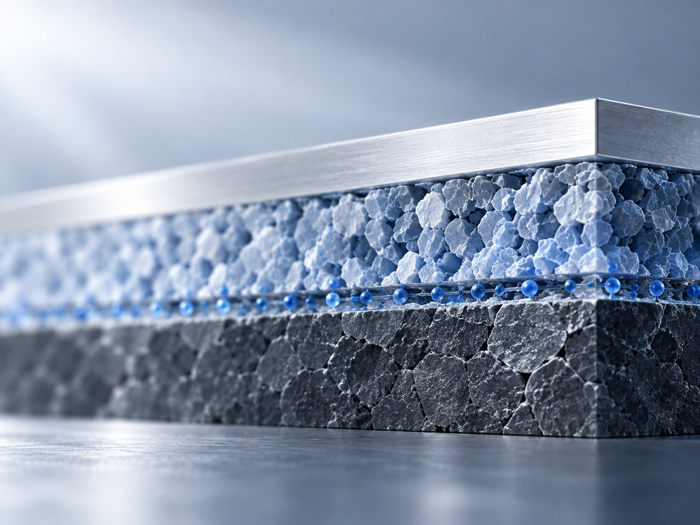
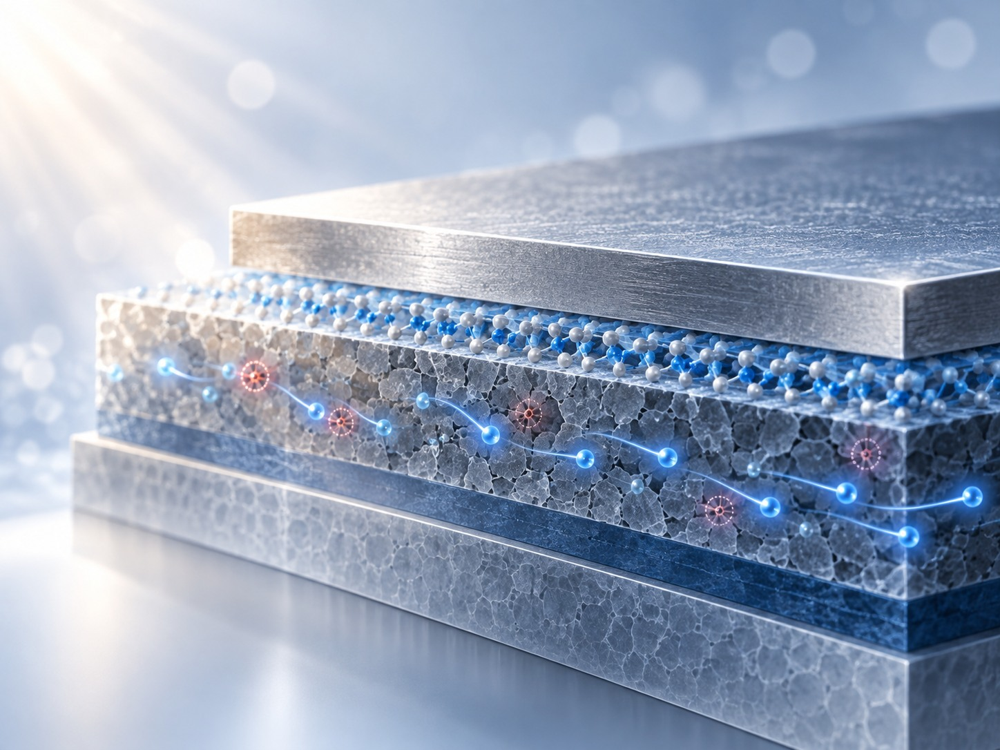

MIN JONG LEE
Interface & device physicsemerging electronics. I study interfaces, defects, ionic motion, and charge transport in emerging electronic devices. My research spans memory, optoelectronic, and flexible electronic platforms.
Current focus Emerging memory · Device reliability
Long-term direction Integrated electronic systems Integrated M.S.–Ph.D. researcher · Electrical Engineering, Korea University

Concept illustration Core science Interfaces · Defects · Ions · Transport Common questions of interfaces, transport, and reliability across multiple electronic-device platforms.
Long-term direction Integrated electronic systems
Low-temperature electronics · Heterogeneous integration · 3D integration · Device–system co-design Concept illustration · not a paper figure Advanced Materials · 2025
Molecular control of synaptic response Hydrogen-bond-driven artificial synapses improve linearity and symmetry for neuromorphic computing.
Linear and Symmetric Artificial Synapses Driven by Hydrogen Bonding for Accurate and Reliable Neuromorphic Computing
Paper / DOI ↗ 
Concept illustration · not a paper figure Advanced Functional Materials · 2025
Reducing traps in optoelectronic memory An intermediate layer reduces trap density in low-power optoelectronic memristors.
Intermediate Layer-Assisted Trap Density Reduction in Low-Power Optoelectronic Memristors for Multifunctional Systems
Paper / DOI ↗ Concept illustration · not a paper figure Chemical Engineering Journal · 2024
Molecular contacts for indoor devices Self-assembled monolayers tailor hole-selective contacts for indoor organic photovoltaics and capacitor devices.
Tailoring Hole-Selective Contacts via Self-Assembled Monolayers for advancing Indoor Organic Photovoltaic and Capacitor Devices
Paper / DOI ↗ Verified news and research photographs will appear here as they become available.